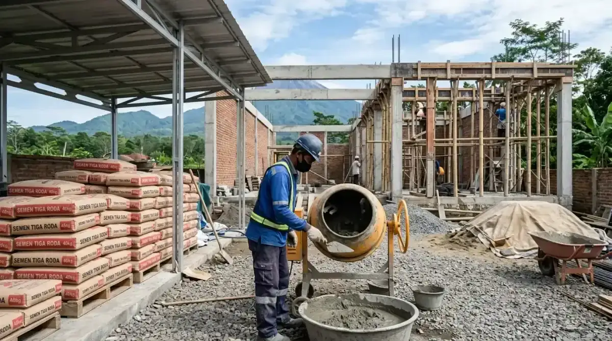

Ringkasan Inti
- Dominasi bata ringan semakin meluas di kalangan kontraktor Malang untuk memangkas waktu kerja pasangan dinding hingga 40%.
- Semen berstandar SNI menjadi prioritas mutlak demi menjamin kuat tekan beton yang konsisten di iklim sejuk dan lembap.
- Kombinasi semen mortar instan dan bata ringan menghasilkan dinding lebih presisi dengan beban struktural lebih ringan.
- Perencanaan material yang cermat menekan angka limbah konstruksi dan menjaga anggaran tetap efisien.
Daftar Isi Artikel
Memasuki tahun 2026, lanskap industri konstruksi di wilayah Malang Raya mengalami transformasi dinamis. Tingginya biaya tenaga kerja harian serta tuntutan kecepatan penyelesaian proyek hunian mendorong para kontraktor dan arsitek beralih ke material modern yang menawarkan efisiensi tinggi, khususnya pada pemilihan pasangan bata dan semen.
Tren Material Konstruksi yang Populer di Malang Tahun 2026
Tren material konstruksi yang populer di Malang tahun 2026 menunjukkan pergeseran nyata dari metode konvensional padat karya menuju sistem modular cepat pasang. Kondisi iklim Malang yang bersuhu sejuk dengan kelembapan udara relatif tinggi menuntut material dinding dan perekat yang memiliki daya kedap air optimal serta stabilitas termal tinggi.
Beberapa tren material unggulan yang mendominasi proyek pembangunan perumahan di Malang meliputi:
- Bata Ringan Autoclaved Aerated Concrete (AAC): Semakin dominan dipilih sebagai pengganti bata merah tradisional untuk dinding interior dan eksterior rumah tinggal 2 lantai, mempercepat proses konstruksi hingga 35-40%.
- Semen Mortar Instan Siap Pakai: Menggantikan campuran semen pasir manual di lapangan. Mortar tipis (thin bed mortar) menjamin ketebalan siar hanya 2-3 mm yang rapi dan kuat.
- Semen Komposit Portland (PCC) Bersertifikasi SNI: Pilihan utama kontraktor untuk pengerjaan plesteran, acian, dan struktur beton karena menghasilkan permukaan halus tahan retak rambut.
- Elemen Pracetak dan Dak Ringan: Solusi inovatif lantai tingkat tanpa perlu perancah bekisting kayu berlebih, meminimalkan limbah di area kerja yang terbatas.

Alasan Kontraktor Cenderung Memilih Bata Ringan dan Semen SNI
Keputusan kontraktor profesional di Malang mengadopsi tren ini didasarkan pada perhitungan rasio efisiensi teknis dan finansial yang telah teruji di puluhan proyek perumahan di Blimbing, Lowokwaru, hingga Karangploso.
Faktor pertimbangan utama di balik pilihan material tersebut:
- Kecepatan Pasang dan Reduksi Ongkos Tukang: Dimensi bata ringan yang presisi (60x20 cm) memungkinkan tukang memasang luasan dinding lebih luas per hari kerja dibanding bata merah konvensional yang ukurannya bervariasi.
- Reduksi Beban Gempa pada Struktur: Bobot bata ringan yang hanya sepertiga bata merah mengurangi beban mati (dead load) bangunan, sehingga dimensi balok dan kolom beton bertulang dapat didesain lebih hemat dan tahan getaran gempa.
- Konsistensi Mutu Standar Nasional: Semen bermerek dengan sertifikat SNI diproduksi melalui pengawasan mutu pabrikasi yang ketat, mengeliminasi risiko kegagalan kuat tekan beton akibat gradasi pasir lokal yang bercampur lumpur.
- Kemudahan Logistik di Lokasi Sempit: Pengemasan semen instan dan palet bata ringan mempermudah bongkar muat di kawasan perumahan perkotaan dengan jalan lingkungan terbatas.
Catatan Arsitek Malang
Meskipun bata ringan sangat unggul untuk dinding lantai 1 dan lantai 2, gunakan selalu bata merah padat atau batu kali untuk 3–4 lapis bata terbawah yang bersentuhan langsung dengan sloof dan tanah basah (daerah trasram). Langkah ini penting guna mencegah rembesan air kapiler tanah merusak cat dinding bagian bawah di iklim Malang yang lembap.
Pengaruh Tren Material terhadap Biaya Konstruksi Menyeluruh
Sekilas, harga satuan bata ringan dan semen mortar instan per zak tampak lebih tinggi dibanding bata merah bakar atau pasir kali curah. Namun apabila dihitung dalam skema Total Cost of Construction, tren material modern justru menghasilkan penghematan signifikan:
- Efisiensi Plesteran dan Acian: Karena permukaan pasangan bata ringan sangat rata dan tegak lurus (lot), tebal plesteran cukup 1 cm (bahkan bisa langsung acian tipis skim coat), menghemat semen hingga 50%.
- Penyusutan Waktu Proyek (Waktu adalah Uang): Waktu pengerjaan struktur dan dinding yang lebih cepat 3–4 minggu menghemat biaya upah mandor, sewa perancah, dan biaya operasional lapangan.
- Pencegahan Retak Rambut dan Klaim Perbaikan: Penggunaan semen berkualitas dengan formula anti-susut meminimalkan risiko retak rambut pada dinding plesteran, mengeliminasi biaya cat ulang di kemudian hari.
Pertimbangan Penting Sebelum Memilih Material Bangunan Terkini
Sebelum memutuskan spesifikasi material untuk hunian Anda, diskusikan secara menyeluruh bersama arsitek atau tim kontraktor pelaksana. Pastikan tukang yang dipekerjakan memiliki keterampilan memasang bata ringan dengan roskam bergerigi khusus agar sambungan mortar merekat sempurna tanpa celah udara.
Selain itu, pastikan ketersediaan pasokan dari produsen lokal di Jawa Timur agar jadwal pengecoran dan pemasangan dinding tidak tertunda akibat kelangkaan stok semen atau bata ringan di pasaran.
FAQ (Pertanyaan Sering Diajukan)
Apakah bata ringan selalu lebih baik dibanding bata merah konvensional?
Keduanya memiliki keunggulan tersendiri. Bata ringan unggul dalam kecepatan pemasangan, presisi dimensi, dan bobot ringan untuk bangunan 2 lantai. Namun bata merah lokal Malang tetap ideal untuk dinding kamar mandi basah, fondasi rolag, atau dinding ekspos bertekstur alami.
Apakah material pracetak cocok untuk semua jenis proyek di Malang?
Material pracetak (seperti dak keraton atau panel lantai ringan) sangat ideal untuk proyek di kawasan padat permukiman yang memiliki keterbatasan ruang pencampuran semen cor atau jalan masuk sempit yang sulit dilalui truk molen ready-mix.
Bagaimana cara memastikan semen yang digunakan sudah bersertifikasi standar nasional?
Pastikan terdapat cap stempel resmi SNI (Standar Nasional Indonesia) serta kode tipe PCC atau OPC pada kemasan kantong zak semen, dan belilah melalui distributor atau toko bahan bangunan resmi terpercaya di wilayah Malang.
Ingin Bangun Rumah Efisien dengan Material Berkualitas?
Konsultasikan pilihan material, perhitungan struktur beton tahan gempa, dan manajemen proyek bersama kontraktor ahli Arsitek Malang.

Muhammad Musyaffa
Penulis & Tim Riset Arsitektur Maroon Arsitek Malang, spesialis pemilihan material konstruksi inovatif, efisiensi anggaran bangunan, dan teknik konstruksi ramah lingkungan di Malang Raya.